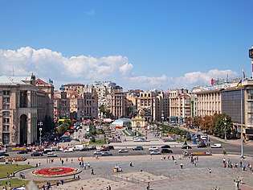

День Києва
День Києва (День міста Київ) — свято, присвячене місту Київ, яке відзначають в останню неділю травня.
Історія та відзначення
Перше святкування Дня Києва відбулося наприкінці травня 1982 року, яке співпало із святкуванням 1500-річчя Києва. З 1984 року почалися регулярні вернісажі на Андріївському узвозі. А в останню неділю травня 1987 вперше було офіційно відзначено День міста Києва. Цю дату, за неперевіреним джерелом, запропонував журналіст В'ячеслав Лашук. Насправді заходи присвячені Дню Києва, відбуваються протягом декількох днів (трьох-п'яти), які передують останній неділі травня. В дні святкування відбуваються традиційні міжнародні змагання з велоспорту, щорічна спортивно-благодійна акція «Пробіг під каштанами» (забіги для спортсменів і любителів, старт для учасників на візках і дітей до 7 років), змагання з пляжного футболу, відкрита регата, фестиваль повітряних зміїв, міський турнір з кікбоксингу, чемпіонат Києва з роликового спорту та інше. На Співочому полі, в ботанічних садах відбуваються виставки весняних квітів. У більшості київських театрів показують спеціально підготовлені вистави для дорослих і дітей. Традиційно, на головній площі міста — Майдані Незалежності, відбувається великий концерт за участю артистів української естради та шоу-колективів. Завершує святкування дня Києва шоу феєрверків з лазерними ефектами над Дніпром.
Посилання
- УНІАН Архівовано 28 квітня 2013 у Wayback Machine.
- День Києва Архівовано 19 червня 2013 у Wayback Machine.
- Ліга. Новини Архівовано 12 грудня 2013 у Wayback Machine.
- Ділова Мова. День Києва. Архівовано 2 травня 2012 у Wayback Machine.
- Газета "Вести" Архівовано 2 червня 2014 у Wayback Machine.